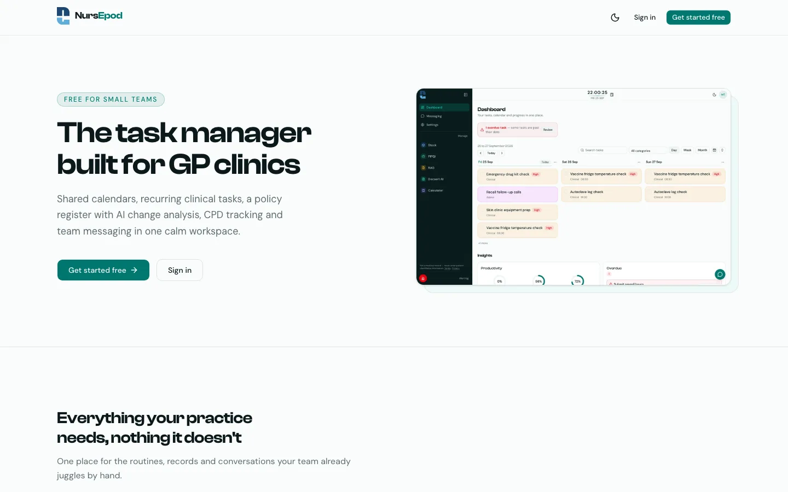

Nursepod: Task Management for Australian GP Clinics
One shared calendar, recurring tasks, team messaging and a policy register for the whole practice team.

What is Nursepod?
Nursepod is task management software for Australian GP clinic teams. The whole practice works from one shared calendar — recurring clinic routines appear automatically, messages stay inside the team, and every completed task is attributed, so handover takes minutes. It also carries a policy register with AI change analysis and CPD tracking. Free to start.
What Nursepod does
The routines, records and conversations your team already juggles by hand — in one calm workspace.
One shared team calendar
Day, week and month views keep the practice on the same page. Recurring clinic routines materialise automatically, and every completion is attributed to a team member, so handover is effortless.
Messaging and staff alerts
Direct messages and group chats scoped to your organisation, with read tracking. A simple alert tells the rest of the team to check in — no shouted questions across the treatment room.
A policy register that minds itself
Every workplace policy gets numbered versions, tracked review dates and AI change analysis that summarises exactly what each update changes. Ask Narsy, the built-in assistant, and it answers from your own register, citing document, version and page.
CPD compliance without the spreadsheet
A continuing professional development register for the whole team, shaped around AHPRA renewal cycles. Points, certificates and expiry dates stay current without anyone chasing them.
Who it's for — and how it works
Built for the practice nurse juggling recalls, task lists and handovers — and just as much for reception, admin and the GPs sharing the same day. Organisation roles are managed by admins, and members join by email invite or join code, so the whole team works from one live list without sharing logins.
-
Step 1 — Set up your organisation
Create your organisation and invite the team by email or join code. The free plan covers up to 300 tasks and 2 team members, with no credit card required.
-
Step 2 — Put the routines on the calendar
Add the clinic's recurring routines once and they materialise on the shared calendar automatically. Pin your most-used clinical resources as quick links.
-
Step 3 — Work the day from one list
Complete tasks straight from the card, message or alert the team as needed, and let insights — completion rings and the overdue triage list — run the handover.
Nursepod vs the whiteboard and run-sheet
A whiteboard is free and familiar — until the run-sheet lives in someone's bag and handover depends on who stayed back.
| The job | Nursepod | The alternative |
|---|---|---|
| One list for the whole team | Shared calendar and live task list on every device | Whoever holds the run-sheet knows the plan |
| Recurring routines | Set once — they appear automatically | Rewritten every week by hand |
| Handover | Completions attributed; overdue work triaged | Verbal handover and hope |
| Policies and CPD | Register with review dates and AI change analysis | Folders and a spreadsheet nobody opens |
| When the auditor asks | Exportable reports | Reconstructing from memory |
| Cost | Free (300 tasks, 2 members); Unlimited $39/month per organisation | Free — until something is missed |
Nursepod FAQ
The questions practices ask before switching.
Who can assign tasks on Nursepod?
Tasks live on the shared team calendar, so any team member can see, pick up and complete them — and every completion is recorded against the person who did it, with a full audit trail. Admins manage the organisation's roles and invite members by email or join code.
Does Nursepod work on the clinic iPad?
Yes. Nursepod is a web app, so it runs in any modern browser — including Safari on the clinic iPad — with nothing to install. Sign in and the same live task list follows the team between the front desk, treatment room and consult rooms.
How much does Nursepod cost?
The free plan covers up to 300 tasks, 2 team members and 5 quick links, with the shared calendar, messaging and policy register included. Unlimited is $39 per month per organisation (30-day trial, billed monthly through Stripe, cancel anytime) for unlimited everything, analytics and priority email support.
Does Nursepod store patient information?
It is privacy-aware by design: Nursepod warns before potentially identifying patient details are saved to a task, and calendars, tasks and conversations never leave your organisation. There are no patient identifiers in Narsy chat. Data is encrypted in transit and at rest on Supabase (SOC 2 Type II, ISO/IEC 27001).
What is Narsy?
Narsy is Nursepod's built-in practice and policy assistant. Ask in plain language and it answers from your own policy register, citing the document, version and page it came from — with a link that opens the file at the exact page. It can also draft database queries for Bp Premier, which your team reviews and runs themselves.
Stop Running the Shift From Memory
Set your practice up in under a minute — free for small teams, no credit card required.
Part of the ClinicIQ suite
Nursepod sits alongside Docsert AI, PIPQI, cIQventory, Camog — free to start on every app, and the four Pro tools bundle for $99/month. The full suite overview lives on the automations page. Related reading: the flu clinic run-sheet.
Page last updated: 03/10/2026